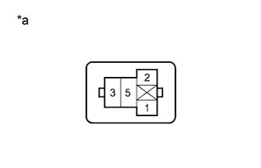

СИСТЕМА ОСВЕЩЕНИЯ > Цепь задних противотуманных фонарей |
| 1.ВЫПОЛНИТЕ АКТИВНУЮ ДИАГНОСТИКУ С ПОМОЩЬЮ ПОРТАТИВНОГО ДИАГНОСТИЧЕСКОГО ПРИБОРА (ДЛЯ РЕЛЕ ЗАДНИХ ПРОТИВОТУМАННЫХ ФОНАРЕЙ) |
Выполните диагностику в режиме Active Test с помощью портативного диагностического прибора (Нажмите здесь).
| Информация на дисплее прибора | Испытываемое устройство | Диапазон регулирования | Замечание по диагностике |
| Rear Fog Light Relay | Реле задних противотуманных фонарей | ON (ВКЛ) / OFF (ВЫКЛ) | Переключатель света фар устанавливается в положение TAIL. |
|
| ||||
| OK | ||
| ||
| 2.ПРОВЕРЬТЕ РЕЛЕ ЗАДНИХ ПРОТИВОТУМАННЫХ ФОНАРЕЙ (FOG RR) |
 |
Извлеките реле задних противотуманных фонарей из блока реле моторного отсека.
Измерьте сопротивление в соответствии со значениями, приведенными в таблице ниже.
| Контакты для подключения диагностического прибора | Условие | Заданные условия |
| 3 - 5 | Напряжение аккумуляторной батареи не подается на контакты 1 и 2 | 10 кОм или более |
| Напряжение аккумуляторной батареи подается на контакты 1 и 2 | Менее 1 Ом |
|
| ||||
| OK | |
| 3.ПРОВЕРЬТЕ ЖГУТ ПРОВОДОВ И РАЗЪЕМ (РЕЛЕ ЗАДНИХ ПРОТИВОТУМАННЫХ ФОНАРЕЙ (FOG RR) - АККУМУЛЯТОРНАЯ БАТАРЕЯ) |
|  |
Измерьте напряжение в соответствии со значениями, приведенными в таблице.
| Контакты для подключения диагностического прибора | Режим | Заданные условия |
| Контакт 5 реле задних противотуманных фонарей - масса | Всегда | 11-14 В |
| Контакт 2 реле задних противотуманных фонарей - масса | Переключатель света фар выключен | Менее 1 В |
| Переключатель света фар в положении габаритных фонарей | 11-14 В |
| *a | Вид спереди разъема со стороны жгута проводов: (к реле задних противотуманных фонарей) |
|
| ||||
| OK | |
| 4.ПРОВЕРЬТЕ ЖГУТ ПРОВОДОВ И РАЗЪЕМ (РЕЛЕ ЗАДНИХ ПРОТИВОТУМАННЫХ ФОНАРЕЙ (FOG RR) - ГЛАВНЫЙ ЭБУ КУЗОВА) |
Снимите главный ЭБУ кузова (Нажмите здесь).
Измерьте сопротивление в соответствии со значениями, приведенными в таблице ниже.
| Контакты для подключения диагностического прибора | Условие | Заданные условия |
| Контакт 1 реле задних противотуманных фонарей - A-27 (RFGO) | Всегда | Менее 1 Ом |
| A-27 (RFGO) - масса | Всегда | 10 кОм или более |
|
| ||||
| OK | ||
| ||